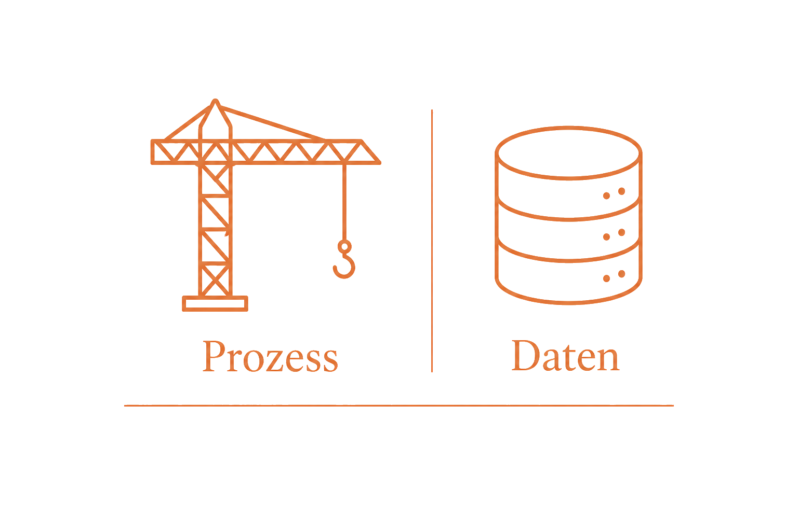
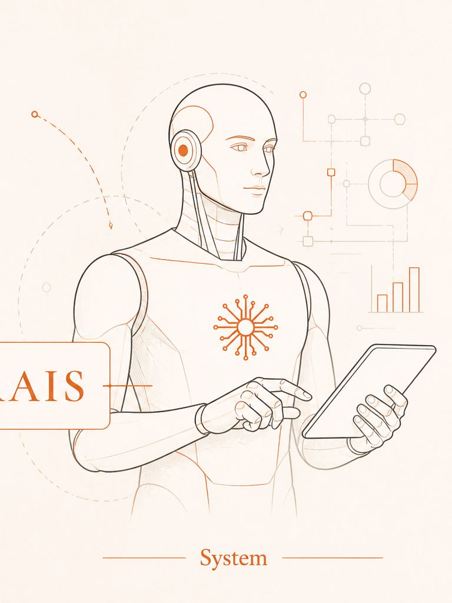

Verkaufsdauer
Ihr Objekt steht länger. Jede Woche, die Sie brauchen, zählt für Ihren Mandanten.
Nicht weil Ihre Mitarbeiter schlecht arbeiten. Sondern weil diese Arbeit anfällt, egal wie gut jemand ist.
Jede vernachlässigte Anfrage kostet Sie Umsatz und Kunden. An mehreren Seiten zugleich.
Ihr Objekt steht länger. Jede Woche, die Sie brauchen, zählt für Ihren Mandanten.
Sie haken nicht rechtzeitig nach. Der kaufbereite Interessent ist weg, bevor Sie antworten.
Ihr Team ertrinkt in manueller, unanspruchsvoller Arbeit. Die Moral sinkt. Würdigere Aufgaben bleiben liegen.
Sie haben keine Zeit für die Beratung. Die Vorarbeit frisst Ihren Tag.
Sie antworten zu spät. Der Verkauf dauert zu lange. Ihr Ruf leidet, bevor der Abschluss kommt.
8–10 Stunden. Jede Woche.
Nur die Vorarbeit, die Sie sehen. Ohne den Auftrag, der Ihnen deshalb entgeht.
Ihre Zahlen. Nicht unsere.
nur für manuelle Vorarbeit
Und das ist nur die Zeit, die Sie sehen. Die Anfrage, die am Samstagabend eingeht und Montagmorgen auf Platz 40 liegt, steht auf keiner Lohnabrechnung. Der Auftrag, der deshalb woanders landet, auch nicht.
Nur aus Ihren eigenen Angaben gerechnet. Wir behaupten nichts über Ihren Betrieb.
Daten und Prozesse zuerst als Fundament.
Wer auf KI baut, ohne Fundament, baut instabil. Es braucht klar definierte Standardprozesse und eine saubere Datenmenge, bevor KI überhaupt angegangen wird. Sonst werden die Ergebnisse nicht besser.
KI auf einen Scherbenhaufen zu setzen macht alles nur schlimmer.

Ist nur die falsche Reihenfolge.
Erst muss klar sein, was passieren soll. Dann kann ein System die Arbeit übernehmen.
Keine Theorie. Wir nehmen einen echten Prozess aus einem Immobilienunternehmen und zeigen, was davon automatisiert werden kann.
Das Video folgt in Kürze. Bis dahin: Prozess und Zahlen darunter.
ImmScout24 bis CRM. Ohne manuelle Vorarbeit dazwischen.
Bereit. Starten Sie die Simulation.
KI ist ein Werkzeug, um Ihr Team zu entlasten. Kein Ersatz für den einzigartigen menschlichen Kontakt.

Wiederkehrende Vorarbeit. Kein Ersatz für Fachurteil.
Erfassen, verstehen, qualifizieren, beantworten.
Aufnehmen, zuordnen, nächsten Schritt vorbereiten.
Verfügbarkeiten, Koordination, Nachfassen.
Strukturieren und in bestehende Systeme schreiben.
Daten extrahieren, strukturieren, weitergeben.
Zahlen zusammenführen, Reports vorbereiten.
Erstreaktion. Gemessen am Beispielsystem AMS, nicht an einem erfundenen Vorher-Nachher.

Geschäftsführer von RAIS aus Koblenz. Sie reden mit mir, nicht mit einem Vertrieb. Wenn wir bauen, baue ich auch selbst.
Davor bei 1&1, an Systemen, bei denen ein Ausfall sofort Kunden trifft. Als KI-Datenanalyst für Qualitätsmanagement weiß ich, wie existenziell der Erfolg von KI-Infrastrukturen an Überprüfung und Monitoring der Antwortqualität hängt.
KI ohne prüfende Instanzen bringt Unvorhersehbarkeit. KI mit den richtigen Schutzebenen bringt Arbeitsentlastung und echtes gespartes Geld für Ihr Unternehmen.
Wahrscheinlich nicht.
Das teuerste Modell macht Ihren Prozess nicht besser. Eine Anfrage lesen, sortieren und weiterleiten braucht kein Spitzenmodell. Oft reicht ein günstigeres, das den Job zuverlässig erledigt.
Wir wählen danach, was sich rechnet. Nicht danach, was gerade laut vermarktet wird.
KI muss Geld sparen. Sonst ist es Spielzeug.
Deshalb der Stack: mehrere Werkzeuge und Modelle. Was zum Prozess passt, bleibt.
EU-Hosting · AVV nach Art. 28
Die kostenlose KI-Roadmap. Kein Beratungsgespräch. Ein Prozess-Check.
Kein Verkaufsgespräch. Wenn wir keinen sinnvollen Anwendungsfall sehen, sagen wir es Ihnen.
KI-Roadmap anfragen
Ehrlich gesagt: Unter einer klaren Schwelle raten wir ab. Darüber lohnt der Prozess-Check.
Unter etwa zehn Vorgängen pro Woche rechnet sich der Aufwand meistens nicht. Dann sagen wir es Ihnen.
Drei kurze Fragen, dann der Kalender. Die schriftliche Roadmap behalten Sie.
Kein Pitch. Wenn wir keinen sinnvollen Anwendungsfall sehen, sagen wir es Ihnen.
60 Minuten. Wir schauen uns einen echten Prozess an. Was kostet er heute, was muss ein Mensch machen, was lässt sich automatisieren, was bringt das wirtschaftlich. Danach eine schriftliche Roadmap. Kein Pitch.
Kein öffentlicher Preis. Der Aufwand hängt an Prozessen, Datenlage und Betrieb. Sie bekommen ein schriftliches Angebot mit Umfang, Zeitplan und Preis, bevor irgendetwas gebaut wird.
Nein. Wir bauen an Ihre Systeme an. Ein Wechsel ist nie die Voraussetzung.
Jedes CRM, das uns bisher begegnet ist, ließ sich anbinden. Unterschiedlich ist nur der Aufwand. Typisch: onOffice, Propstack, FlowFact, Haufe, Microsoft 365, Google Workspace. Bei Excel bauen wir zuerst die Ablage.
Selbst gehostet in der EU, Datenbank Frankfurt, AVV nach Art. 28 DSGVO. Was bei Ihnen angebunden wird und wo Daten liegen, steht in der Roadmap, bevor gebaut wird.
Für den Betrieb nicht. Sie brauchen jemanden, der fachlich entscheidet, was das System darf, und Freigaben erteilt.
Sie behalten die Roadmap. Wenn es sich lohnt und Sie wollen, bauen wir. Wenn nicht, endet es dort.
Laufzeit zwölf Monate. Garantie: Wenn die vorher gemeinsam festgelegten Ergebnisse nach drei Monaten nicht stehen, kommen Sie ohne Haken aus dem Vertrag. Voraussetzung: Zugang und Nutzung durch Ihr Team.
Die drei Qualifizierungsangaben speichern wir zur Gesprächsvorbereitung. Name, E-Mail und Telefon entstehen erst in der Terminbuchung. Details in der Datenschutzerklärung.
Keine Logos ohne Mandat. Die Zahlen oben kommen vom Beispielsystem AMS und sind gemessen. Freigaben zur Kundennennung stehen noch aus. Auch das sagen wir lieber offen.
60 Minuten, kostenlos. Sie geben Ihre Angaben direkt im Kalender ein, ein zweites Formular gibt es nicht.